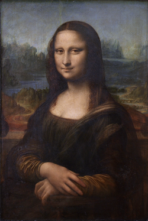

Razonamiento circular
La Mona Lisa, el más famoso e importante retrato en la historia del arte universal. La pintura perfecta, la mayor obra de arte, el fruto del genial Leonardo. Y sin embargo por siglos fue una oscura pieza de arte colgada en las residencias privadas de los reyes franceses. Incluso después de la revolución francesa, al pasar al Louvre no llamaba tanto la atención de los críticos de arte.
Fue el famoso robo de 1911, realizado por Vincenzo Perugia, a instancias del traficante de arte Eduardo Valfierno, el que cimentó la fama universal de este cuadro. Se llegó incluso a acusar a Apollinaire y a Picasso del hurto. Por semanas la gente empezó a visitar el Louvre para apreciar el hueco dejado por el robo. Lentamente La Mona Lisa empezó a convertirse en el objeto más valioso del arte occidental.

El hueco dejado tras el robo de la Mona Lisa en el Louvre en 1911
Dos años y ciento once días después Vincenzo Peruggia es detenido y el cuadro recuperado. El ladrón alegó que lo había hecho por patriotismo, para devolver la obra a Italia, y que era víctima del estafador Valfierno. La pintura fue exhibida en Florencia, Roma y Milán antes de ser devuelta a Francia.
Esto la convirtió en un ícono cultural. Plagiada miles de veces, ha sido pariodada, homenajeada, citada, una y otra vez. Ha sido asegurada en más de 700 millones de dolares, es la obra de arte más valiosa del mundo, irreemplazable. Cada vez que alguien cita, re mezcla, parodia, o usa a la Mona Lisa incrementa su fama.
Y sin embargo, con toda la admiración que se le tenía, Leonard Da Vinci era considerado, hasta antes del siglo XX un buen pintor, pero inferior a Tiziano o Rafael. La Mona Lisa no era considera una obra de calidad superior a otras. Pero hoy en día esta obra es el patrón de calidad en el arte.

“Es imposible ahora imaginar la historia del arte occidental sin la Mona Lisa, en ese sentido, es realmente la más grande de todas las pinturas. Pero también es imposible atribuir su estado único a nada de la pintura en si misma. Pero esto último presenta un problema, porque cuando tratamos de explicar el éxito de la Mona Lisa, enfocamos nuestra atención precisamente en sus atributos.”
“[...] Para sobre simplificar ligeramente [el argumento de los críticos de arte], la Mona Lisa es la pintura más famosa del mundo porque es la mejor, y aunque pudo tomarnos un tiempo [como sociedad] darnos cuenta de esto, era inevitable que esto ocurriría. Y por esto es que tanta gente queda intrigada cuando ven a la Mona Lisa con sus propios ojos. Están esperando que estas cualidades intrínsecas sean aparentes, y no lo son. Por supuesto, muchos de nosotros, cuando nos encontramos ante este momento de disonancia simplemente encogemos nuestros hombros y asumimos que alguien más sabio que nosotros ha visto algo que no podemos ver.”1
Y aunque un crítico de arte exponga las evidencias que “demuestran” que la Mona Lisa es la mejor obra de arte que existe, es posible encontrar estos mismos atributos en otros trabajos, que podrían parecer tan buenos, e incluso mejores. Por cierto, este problema se evita indicando que no es un único atributo de la Mona Lisa la que lo hace especial, si no que la combinación de todos sus atributos (la sonrisa, el uso de la luz, el fantástico fondo, etc.) No hay manera de rebatir este argumento, porque la Mona Lisa es un objeto único. Parece que se resalta la calidad de esta obra de arte en términos de sus atributos, en realidad lo que se hace es lo opuesto. Se ha decidido cuál es la mejor obra de arte, y sólo a partir de sus atributos se define la métrica de la calidad. “Decimos que la Mona Lisa es la pintura más famosa del mundo porque tiene los atributos X, Y, y Z. Pero en realidad lo que decimos es que la Mona Lisa es famosa porque es la cosa más parecida a la Mona Lisa que existe.”1
Y esto puede ser aplicado a cualquier obra de arte, o para definir la genialidad. Shakespeare es grande porque se parece a Shakespeare, o Cervantes porque es igual a Cervantes. Nos han enseñado que Cervantes, Da Vinci, Shakespeeare o Mozart son genios, y la genialidad está dada por la similitudo que se tiene con respecto a quienes han sido establecidos como genios. Sé que es un argumento difícil de aceptar, que nos puede molestar, pero es así, muchos de los patrones de calidad cultural vienen de este tipo razonamientos circulares:
X tiene éxito, o es genial, porque X tiene los atributos de X
Este tipo de razonamientos impregna muchas de las explicaciones de sentido común de porque algunas cosas tienen éxito y otras fallan.
“Cuando Facebook se hizo popular por primera vez, se explicó que su éxito se debía a la exclusividad asociada a los estudiantes de ciertas universidades. En el 2009, cuando Facebook ya se había abierto a cualquiera, un reporte de Nielsen atribuía su éxito a su gran atractivo, junto con su diseño sencillo, y el foco en establecer conexiones. Facebook, en otras palabras, era exitoso porque tenía exactamente los atributos de Facebook, aunque estos atributos en si mismos cambiaron completamente.”1
Otro forma de econtrar este razonamiento circular es del tipo: “La gente hace X, porque X es la norma, y es normal seguir la norma”. Y ¿cómo sabemos cuando algo es la norma? Y cuando empezamos a tomar atención nos sorprendemos con la cantidad de explicaciones que son circulares.
Cuando la sociedad pide el matrimonio entre personas del mismo sexo, o una mujer es elegida presidenta, decimos que la sociedad ya “está lista para”. Pero la única manera de saber que la sociedad está lista para algo es que ese algo pase. En otras palabras, lo que decimos es: “X pasó porque eso es lo que la gente quería, y sabemos que X es lo que la gente quería porque X fue lo que pasó”.
Es importante resaltar todo este problema del razonamiento circular porque tiene que ver con uno de los problemas intelectuales centrales en la sociología, al que los sociólogos llaman el problema micro-macro. Los sociólogos quieren explicar lo que es intrínsecamente macro en naturaleza, porque involucra a una gran cantidad de personas. Pero estos resultados son la suma de micro acciones ejecutadas por los individuos.
Las instituciones culturales, como el matrimonio, las normas sociales, incluso los principios legales, sólo tienen relevancia en la medida que un gran número de personas piense que la tiene. Pero para que esto se de las decisiones de la sociedad tienen que ser dirigidas por una gran cantidad de micro acciones individuales. ¿De donde vienen las familias, culturas, y sociedades? ¿Por qué exhiben las características particulares que exhiben? Ese es el problema micro-macro.
Sucede que este problema aparece en otras ciencias, y a menudo se le llama “emergencia” (como por ejemplo, en el comportamiento emergente). Y todo esto tiene que ver con algo de lo que hemos hablado antes en este blog, se trata de la complejidad. La sociología está en la cima de la pirámide de la complejidad que empieza con las partículas subatómicas y finaliza con la sociedad global.
La emergencia es un problema dificil, porque el el comportamiento del todo no puede ser explicado solo por la descripción de las partes, las interacciones son la clave. La sociología estudia una gran variedad de interacciones, de modo que en esta ciencia la emergencia, en la forma del problema micro-macro, se presenta como más compleja e intratable que en otras disciplinas. Lo malo que el sentido común tiende a ocultar esta complejidad.
Consideren la economía, con el fin de simplificar las explicaciones los economistas hablan del consumidor, el mercado, entidades idealizadas que ignoran las interacciones de los miles o millones de individuos que las componen. Se elige lo que se llama un “agente representativo”, y se razona a partir de esta entidad. Lo mismo pasa con otras ciencias sociales. Sistemáticamente se tiende a ignorar la complejidad de las interacciones entre individuos.
En nuestros próximos artículos vamos a ver como investigadores modernos han tratado de desviarse de este tipo de razonamientos, y aprovechando el poder que nos proporcionan los computadores han empezado a explorar la complejidad de las interacciones entre individuos. Es posible construir modelos más complejos y observar los comportamientos emergentes, lo que contribuye un aporte interesante de la computación al estudio de la sociedad.
-
Tomado del libro Everything Is Obvious: *Once You Know the Answer
de Duncan Watts. ↩︎ ↩︎ ↩︎